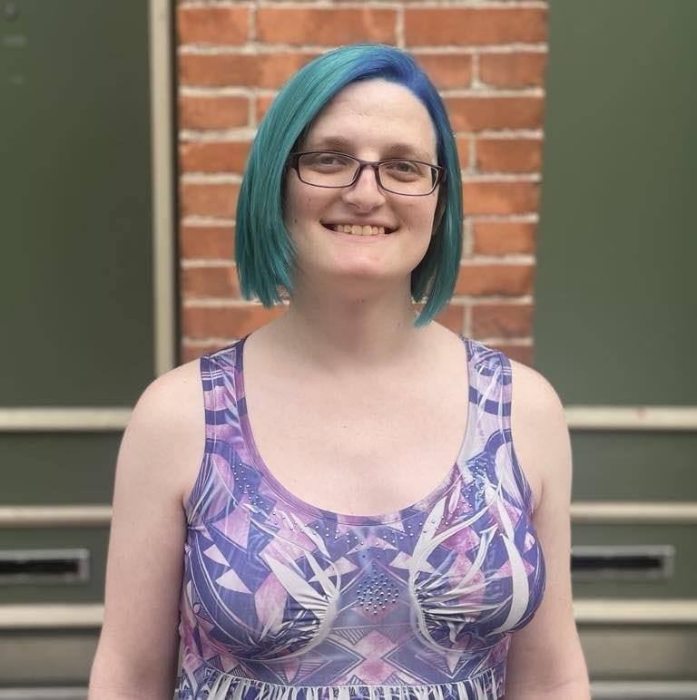

Blue Shark Friends
About
Blue Shark Friends is a technology consulting and software development company that in many ways is part of the post-pandemic small business boom, but our story is rooted in more than just a reaction to the evolving economic pressures at large.
Our commitment to making software for trans people is drawn from our experiences as disabled trans women fighting to survive the current cissexist regime.
We feel that the key to surviving these times is to strengthen the bonds within our community. We want to be more than a business–we want to build a network of trans enterprises that reflects and reinforces our chosen family.
If you're interested, we invite you to get to know us a little better.
Our commitment to making software for trans people is drawn from our experiences as disabled trans women fighting to survive the current cissexist regime.
We feel that the key to surviving these times is to strengthen the bonds within our community. We want to be more than a business–we want to build a network of trans enterprises that reflects and reinforces our chosen family.
If you're interested, we invite you to get to know us a little better.
Hannah Parker
This isn't enough space for me to tell you who I am. Since I'm the Principal Business Analyst and co-founder, I think it's better if I show you.
Would you like to know more …
Would you like to know more …
Josie Stewart

I'm the Principal Software Engineer and a co-founder of Blue Shark Friends. I'm not sure where to start with my story, honestly. I don't have a clean timeline to what brought me here today.
I've been a professional software engineer for over a decade, but I've been embedded in tech development since early childhood. I've been out to everyone as trans since 2019, but I've been out to my immediate family since 2013. I just got diagnosed with Ehlers-Danlos syndrome in 2023, but in many ways disability has been a part of my life for much longer than I realized. Sometimes it feels like I have to tell my whole life story for anything about me to make sense.
Since it's too late for me to spare you the Spider-Man style rant, I might as well also say that I'm a sci-fi/fantasy nerd, and I spend a lot of my spare time writing out details about my favorite works of fiction just to structure my thoughts about them.
Blue Shark Friends is important to me, first and foremost, because I need it. After the past three years of hell in my old job just to be pushed out after asking for accommodations, I need to be doing something for my people. This is the way I believe I can do that. But also, I think our community needs it.
My situation is not all that unique for a trans person. Many of my friends are in similar straits or worse. A lot of folks have already turned to self-employment, and technology is an unavoidable lifeline. I know we can help folks out with our background, and I believe we have to. We need to be a true community–directing our energies and skills into each other as much as possible.
Since it's too late for me to spare you the Spider-Man style rant, I might as well also say that I'm a sci-fi/fantasy nerd, and I spend a lot of my spare time writing out details about my favorite works of fiction just to structure my thoughts about them.
Blue Shark Friends is important to me, first and foremost, because I need it. After the past three years of hell in my old job just to be pushed out after asking for accommodations, I need to be doing something for my people. This is the way I believe I can do that. But also, I think our community needs it.
My situation is not all that unique for a trans person. Many of my friends are in similar straits or worse. A lot of folks have already turned to self-employment, and technology is an unavoidable lifeline. I know we can help folks out with our background, and I believe we have to. We need to be a true community–directing our energies and skills into each other as much as possible.